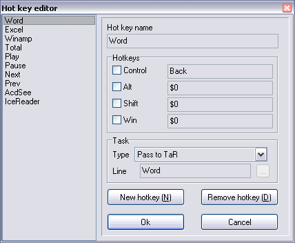

Hotkey manager
Version: 1.0 final
Author: Python <smisoft@rambler.ru> (c) SmiSoft (SA)
What is this:
Some commands are call so frequent (for example, rewinding in Winamp), that even TypeandRun console is not the most convinient way to execute them.
This plugin allows you to create up to 200 keyboard shortcuts (up to 5 keys, pressed together at one time), most known as "hotkeys" from any keys on your keyboard, even multimedia buttons!
Now, I found some time to write final version!
Aliases
- ~SetHotkey
- Syntax:
~SetHotkey ID Hotkey_list [/run,/tar] command
- Desciption
Installs new, or modifies existing hotkey
- Parameters
- ID - any string, that has no spaces in it (if you want, you can replace space with _ sign). It uses as a name in hotkey list in hotkey Editor (see later).
- Hotkey_list - list of scan-codes or predefined names of keys. Scan code has the folowing format: $xx, where xx - hexadecimal number. There are some predefined names, that can be used instead of scan-codes:
- LCtrl,RCtrl - left and right Control
- LShift,RShift - left and right Shift
- LAlt,RAlt - left and right Alt
- LWin,RWin - left and right Win
- Ctrl,Shift,Win,Alt - any side Control, Shift, Alt, Win
- Menu - menu-key on Microsoft Natural keyboard (between right Win and Ctrl on my keyboard)
- Esc - Esc button
- F1..F12 - function keys F1..F12
- ~,1..9,0,-,=,\ - numerical buttons on regular keyboard (on the left)
- any english letters, [, ], ;, ', /, comma, point
- Ins,Home,PgUp,Del,End,PgDn - accordingly, buttons Insert, Home,Page up, Delete, End, Page Down on the regular keyboard
- UArrow, LArrow,DArrow, RArrow - arrows on the regular keyboard (Arrow up, left, down and right)
- Gr1..Gr9,Gr0,Gr.,Gr+,Gr-,Gr*,Gr/ - corresponding buttons on "numerical" keyboard (also, called "gray", so buttons have prefix "Gr")
- Vol+,Vol-,VolMute,Prev,Pause,Stop,Next,Media,Calc,MyComp - corresponding multimedia buttons on my Dialog keyboard. I think, if your keyboard has so buttons, this constants will work too. If not, use Editor.
- Halt,Refresh,Search,Favourites,Back,Forward,Home,EMail - other multimedia buttons on my Dialog keyboard. If you are not sure, use Editor.
Keys: Enter, серый Enter, CapsLock, NumLock, ScrollLock, PrintScreen, Pause are not supported by constants, but you can define it in Editor. I didn't make constants, because i think, that it is a good idea not to use that keys in hotkeys because of they specisl functions.
- /run or /tar - execute command (may be, with parameters), or TaR alias through standart gate.
- command - program name with parameters or any string (it'll be executed, as if it typed in TaR console)
- Examples:
- ~sethotkey Word Back /tar Word
Execute Word by pressing "Backward" key (this is a multimedia key)
- ~sethotkey Winamp Shift Control $1 /run C:\Programs\Winamp\Winamp.exe
Execute Winamp by pressing Control-Shift-Esc (if your Winamp located in other directory, command will differ)
- Special features:
If you define more than one key, they must be pressed simultaneously. For example, you can create a "secret" command, that will be executed on pressing all four arrows!
(Warning! Arrows on "gray" keyboard differ from regular arrows)
- ~KillHotKey
- Syntax:
~KillHotKey [ID]
- Description:
Delete hotkey with given ID, or explains, that there are no keys with that name
- Parameters:
- ID - identificate hotkey, that will be erased. If no ID defined, erase all hotkeys (Use with caution!)
- ~GetHotKey
- Syntax:
~GetHotKey [ID]
- Description
Show information about hotkey with given ID.
- Parameters
- ID - indicate hotkey, that you want to see. If no ID defined, call hotkey Editor.
In editor you'll see:
- Hotkey list
- ID field (it can contain any string without spaces)
- Four checkboxes (Ctrl and so on) - flags, that appropriate key must be down
- Four fields of scan-codes. To enter scan-code, put cursor into field (with a mouse, or using Tab key) and then press any key. To delete scan-code, press that key again.
- Task type and task string fields. You can choose from running program, or executing an alias. Depend on this, in task string you must plase program name (with parameters) or alias name (with parameters).
- Button "Add hotkey" appends new hotkey to the list
- "Delete hotkey" - erase selected item. Everything works like on page "Config editor" in TaR (as I think)
Any operation with the plugin may be done only with Editor. All other aliases duplicate Editor features...

Installation:
In archive, you can find files:
- tar_hotkey.dll - main plugin module
- KHook.dll - keyboard hook procedure
- tar_hotkey.ini - example language file
- tar_hotkey_???.txt - help file (that you read now)
To install, put KHook.dll into TaR directory (where typeandrun.exe located), or into C:\Windows\System (if Windows located in other folder, correct me). This is because Windows seek for DLLs only in specific folders... If you have no KHook.dll, you will see an error message.
Place other files together. In tar_hotkey.ini you can find [Language] section. You can translate the program by editing that lines. If you have no that file, or have no that section, the russian interface will be used.
Features:
- Not all key combination may work. On my keyboard, combination "Arrow left", "Arrow up", "Arrow right" don't work together with "H" key - this is keyboard controller feature. Also, don't define Ctrl-Alt-Del combination.
- If plugin doesn't load correctly, it will show message, but TaR will think, that everything is OK.
- If you define too many hotkeys, your system may slow-down (global hook used...)
- If some other program try to catch the same hotkeys, only my plugin's hotkey will bee executed, except for Windows-specific combinations like Win-M. That also means that you SHOULD NOT use other hotkeys manager.
- Some keyboard drivers use spesific key like Power,Sleep,WakeUp processing, executing appropriate command right after pressing the key. Therefore, on some computes that keys cann't be used in hotkeys.
- You can not define Tab as a part of hotkey. May be, you don't need it?
- When Editor active, hotkeys won't work. That's not a bug but feature.
- Power, Sleep, Wake up buttons can't be used in hotkeys, because on my keyboard they perform appropriate action and plugin can't capture them. I ddon't know, how to prevent this. Maybe, driver problem, but I'm not sure.
- If you receive a note, that hook error occur (not installed, or not removed), please, restart your Windows - I cant't guarantee stable work not only plugin, but whole system at all!
- The example .ini file is the translation of plugin interface to Russian and the example of some hotkeys definition. Some hotkeys must work together with my tar_media plugin.
- Sometimes, key strokes cann't reach my hook procedure. This usually happens when your system communicates with external devices like TV-tuner, external modem or printer. When your think, that hotkeys executes incorrectly, press Ctrl-Alt-Shift-F12 key combination. This will reset plugin status. This hotkey cann't be redefined.
History:
[+] New feature
[*] Fixed bug
[-] Removed feature
Version 1.0 alpha - 21.05.05
[+] Unstable, not all function supported
Version 1.0 beta - 23.05.05
[+] Now, you can run programs with space in names, for example: "C:\Program files\Proga\Proga.exe"
[+] TaR-like interface
[+] English interface (look "Installation" section)
[*] Fixed bug, when program without command line can't execute
[*] Better hook algotithm (Now, works in all Windows, both 9x, and NT/2000/XP)
[*] Recompiled without vcl (and compressed with UPX)
Version 1.0 final - 16.06.05
[+] Many new constants defined
[+] New help in HTML format
[+] New editor's hotkey: Ctrl-Up moves selected item upwards one element, Ctrl-Down - down, Ctrl-PageUp - to the beginning of the list, Ctrl-PageDown - to the end of the list.
[*] No, combinations Win-... processed correctly and no char appear in edit lines.
[*] New, faster hook method. But sometimes it fail, for more information, look item 11 chapter Features